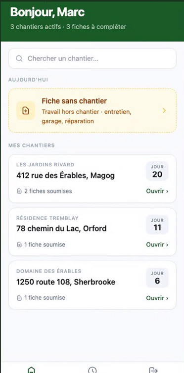
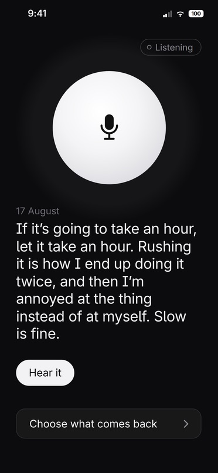
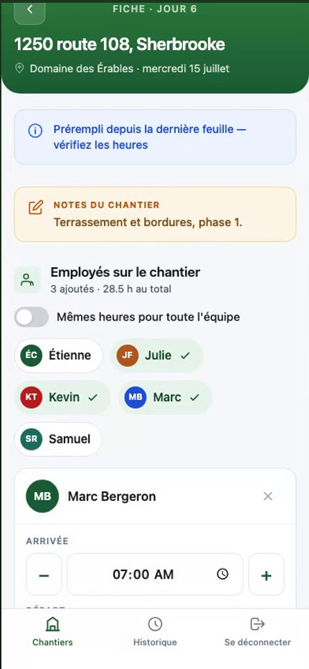
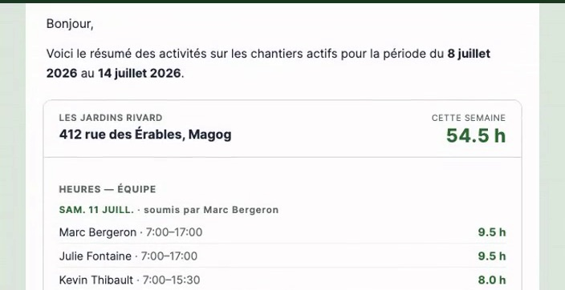
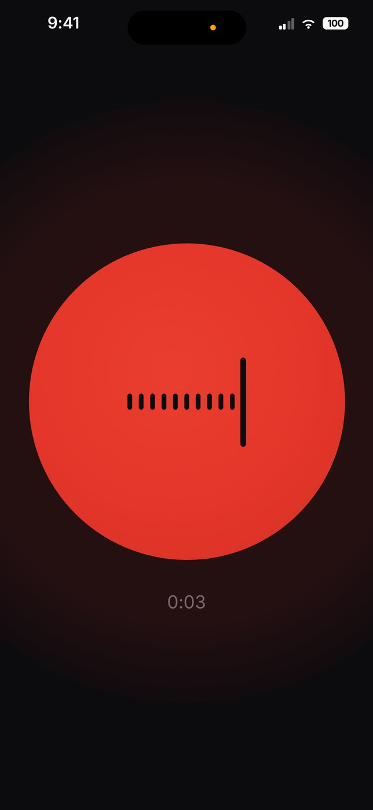
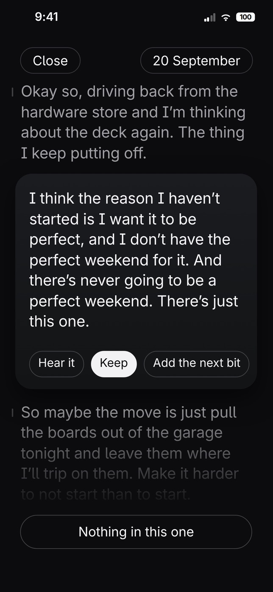

I’m Corey Bailey. I design and build apps for small businesses.
The kind that replaces a paper form, a spreadsheet, or a tool your team works around.
Eastern Townships, Quebec. Ten years in the trades, with UX design alongside.
Before anything gets built, I’ll tell you plainly whether it’s worth building.


ChantierLog
Second Pass
What I can help with
- Designing and building an internal tool from scratch
- Redesigning a tool your team already works around
- Turning a paper form or spreadsheet into an app your crew uses from their phone
- A clickable prototype first, so you can see and test the idea before paying for the build
ChantierLog
chantierlog.caA job-site reporting app. At the end of every day I filled in a paper sheet, pen in hand, and it was a real pain. So I built the app I wanted: easier for crew leads to fill in, and easier for the office to receive and file for billing. It was piloted at the landscaping and excavation company I work for.
On the job site
- Before
- A paper sheet at the end of the day, pen in hand.
- After
- Crew leads file the day from their phones, offline where there’s no signal.
Monday morning
- Before
- Someone in the office chasing hours.
- After
- The office has the whole week assembled, and nobody has to chase anyone for it.
| Before | After | |
|---|---|---|
| On the job site | A paper sheet at the end of the day, pen in hand. | Crew leads file the day from their phones, offline where there’s no signal. |
| Monday morning | Someone in the office chasing hours. | The office has the whole week assembled, and nobody has to chase anyone for it. |


Second Pass
secondpass.appAn iPhone app I designed and built for myself. It started when I noticed I’d reach for my phone looking for answers I already had. You talk into it, and later it plays your own words back to you. It’s in testing with its first users.
It’s where I learned to cut what doesn’t work, even after it’s built.
What I cut, and why
- Cut
- Two AI features I’d already built
- Why
- They failed on the recordings that mattered most.
- Cut
- A feature for long recordings
- Why
- I measured my own recordings. They were short, so it wasn’t needed.
- Cut
- Typing
- Why
- I never used it.
| What I cut | Why |
|---|---|
| Two AI features I’d already built | They failed on the recordings that mattered most. |
| A feature for long recordings | I measured my own recordings. They were short, so it wasn’t needed. |
| Typing | I never used it. |


How I work
Step by step
Most clients can picture the finished yard but not how it gets there, so I walk them through it step by step and answer what comes up along the way. Software is no different.
Scope it down
I’d rather scope something down and have it get used than ship something impressive nobody opens.
One person
I do the design and make the product decisions. The engineering runs through AI tools I direct, so the design and the build come from the same person.